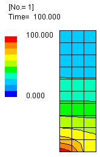
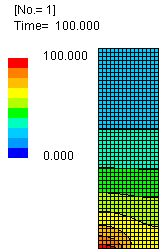

提出課題 6
上記で与えられた ヤコビ法を用いて N 元一次連立方程式
[ A ] { x } = { b }
の解 x を求めるプログラムに対して， 以下の問に答えよ．
- プログラム例にて，vecXとvecTの役割の違いを説明せよ．
- プログラム例おける収束判定(誤差評価)法を説明せよ．
- matA[i][j]の各行 i において，非零要素が存在する左端位置 j_min と右端位置 j_maxを 出力できるようにプログラムを修正せよ (各行において計算に必要とされる範囲を求める)．
- 上の結果を用いて， 反復計算の必要な範囲を局限するようにプログラムを修正せよ．
- 44x44.dat を入力データとして用いた結果を示すこと．
- 各自が用意したdataを用いた結果を示すこと．
余裕があれば - 収束する場合と収束しない場合の方程式/行列の特徴を考察せよ．
- 時間に余裕のある者は， 反復計算を行なう上で必要となる積和演算の回数を数え上げることができるようにせよ． 反復計算の必要な範囲を局限した場合としない場合とで定量的な比較を行なえ．
- さらに時間に余裕のある者は， Gauss-Jordan 法で解を求めるのに必要となる乗除算と加減算の回数を計算し， Jacobi 法で必要となる計算回数と定量的な比較を行なえ．
- さらに時間に余裕のある者は， マトリクス中の零要素のメモリを節約することによって， より大きなマトリクスを扱えるような修正を行ってみよ．
課題提出用データファイルとしては，
/class/mce/NumAnalysis/44x44.dat と各自が用意したものとの二つ以上を用い，
これを標準入力から リダイレクトによって 読み込んで
計算した結果をレポートに示すこと．
なお， 連立方程式によっては， 収束しない場合もあるので注意すること．
収束する場合と収束しない場合との特徴を考察できれば， さらに良い．
入力データ内容
44x44.dat,
816x816.dat,
heat01.dat,
heat02.dat,
heat03.dat,
heat04.dat,
heat05.dat,
heat06.dat,
heat07.dat,
heat08.dat,
heat09.dat
なお，これらの入力データは以下に示すような温度分布の有限要素解析中に現れるものである．
|  |  |
| [ 44x44.dat ] | [ 816x816.dat ] |
Code
Ass.c(改変前)
#include <stdio.h>
#include <stdlib.h>
#include <unistd.h>
#include <string.h>
#include <math.h>
#include <time.h>
#include <sys/times.h> // 構造体tmsを使うために必要>
#include <limits.h>
#ifndef SIZE
#define SIZE (1024)
#endif
#ifndef LIMIT
#define LIMIT (200)
#endif
double matA[SIZE][SIZE], vecB[SIZE], vecX[SIZE], vecT[SIZE];
int n, verbose;
void Simal_Read ( double a[SIZE][SIZE], double b[SIZE] ) /* 連立方程式の読み込み */
{
int i, j;
for ( i=0; i SIZE ) { /* エラー処理 */
printf( "error: Size should be less than or equal to %d.\n", SIZE );
return 1;
}
for (i=0; i prec ) {
cont = 1;
}
if (map) { /* 有効桁数マップの作成 */
dig = (long)( -log(p)/log(10.0)+0.5 );
if (dig > 35) { dig = 35; }
if (dig < 0) { dig = 0; }
printf( "%c", (dig<=0) ? '.' : ((dig<10)?'0'+dig:'A'+dig-10) );
if (i%100 == 99) {
printf("\n ");
}
}
vecX[i] = vecT[i];
}
if (map) {
printf("\n");
}
}
times( &tto ); /* 計算時間計測終了 */
printf( "%03d: ", cc );
V_Write( vecX ); /* 最終解の書き出し */
printf( " user cpu time: %.2lf [sec]\n\n",
(double)(tto.tms_utime-tfrom.tms_utime)/sysconf(_SC_CLK_TCK) );
return 0;
}
Ass.c(改変後)
#include <math.h>
#include <stdio.h>
#include <unistd.h>
// 1910098 Yuto Uematsu
// Fauss-Jordan
実行結果